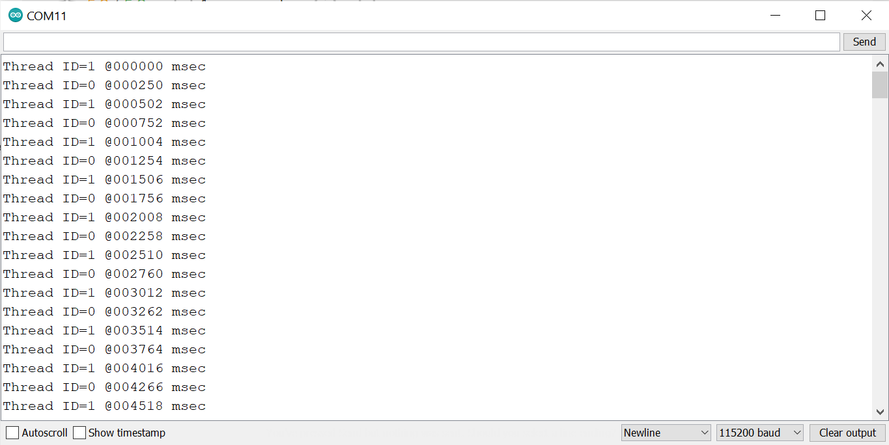
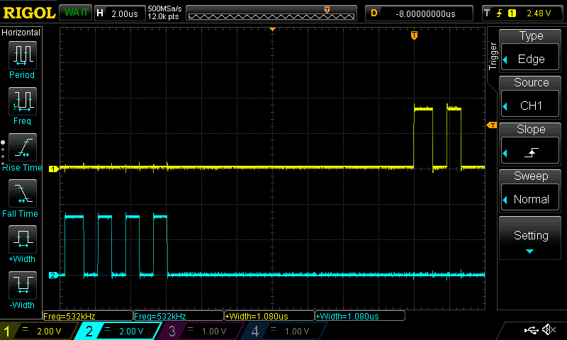
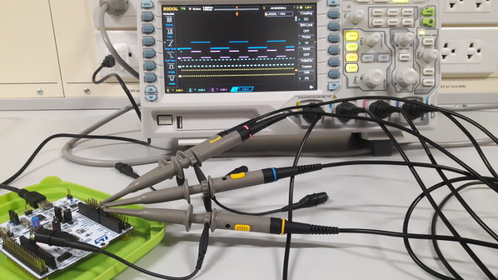
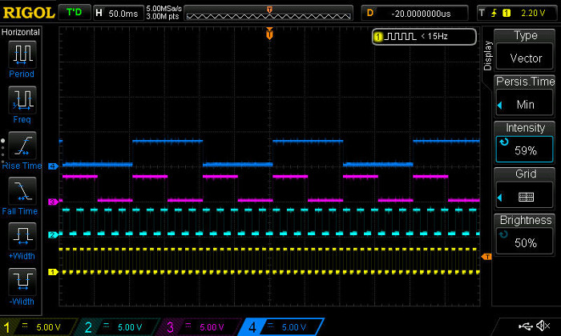
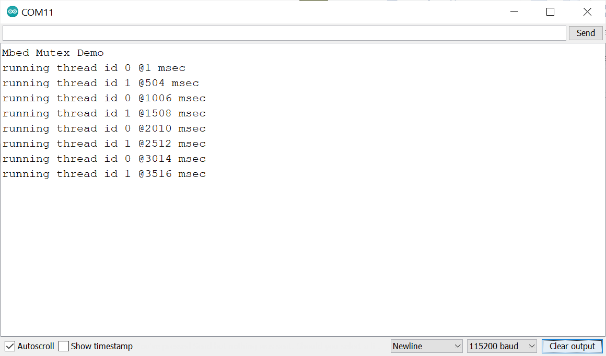

ARM Mbed OS for STM32: Code Examples (Part 3)#
เนื้อหาในส่วนนี้สาธิตการเขียนโค้ดโดยใช้ Mbed OS สำหรับบอร์ดไมโครคอนโทรลเลอร์ เช่น บอร์ด STM32 NUCLEO เป็นต้น โดยนำเสนอเป็น ตอนที่ 3 (ต่อจาก ตอนที่ 1 และ ตอนที่ 2)
Keywords: Mbed OS, STM32 Nucleo, Mbed-enabled Platforms, RTOS Programming
▷ การสร้างเธรดใหม่จากคลาส Thread#
ถ้าลองศึกษาดู Thread API ในส่วนที่เป็น Thread Constructor จะมีรูปแบบดังนี้
Thread (
osPriority priority = osPriorityNormal,
uint32_t stack_size = OS_STACK_SIZE,
unsigned char *stack_mem = nullptr,
const char *name = nullptr
)
มีอาร์กิวเมนต์ตามลำดับดังนี้
- ตัวแรกคือ ระดับความสำคัญของเธรด ถ้าไม่กำหนดค่า จะได้ค่าเป็น
osPriorityNormal(ระดับกลางหรือปรกติ) - ตัวที่สองคือ ขนาดของ Stack สำหรับเธรด ถ้าไม่กำหนดค่า ก็จะได้ค่าเป็น
OS_STACK_SIZE - ตัวที่สามคือ พอยน์เตอร์ที่ชี้ไปยังหน่วยความจำ Stack สำหรับเธรด ถ้ามีการจองพื้นที่เอาไว้ใช้งาน
แต่ถ้าไม่ระบุ จะได้เป็น
NULL(Null Pointer) ซึ่งตัว RTOS จะจัดการให้ - ตัวที่สี่คือ การตั้งชื่อให้เธรด ถ้ามี แต่ถ้าไม่ระบุ จะได้เป็น
NULL
ตัวอย่างนี้สาธิตการใช้คำสั่ง เพื่อสร้างเธรดใหม่ (Thread) จากเธรดหลัก
และมีการกำหนดรูปแบบของอาร์กิวเมนต์ เพื่อใช้กับเธรดดังกล่าว โดยใช้คำสั่ง
callback(...) เมื่อสั่งให้เธรดเริ่มต้นทำงาน thread.start(...)
รูปแบบของอาร์กิวเมนต์สำหรับเธรดในตัวอย่างนี้ เป็นแบบ struct (thread_args_t)
และมีการสร้างฟังก์ชันสำหรับเธรดคือ led_update() ซึ่งจะทำให้ LED1
เปลี่ยนสถานะลอจิก ทุก ๆ 100 มิลลิวินาที
#include "mbed.h"
#include "rtos.h"
using namespace std::chrono; // for milliseconds()
DigitalOut led( LED1 ); // use onboard LED1
Thread thread( osPriorityNormal ); // create a Thread
// user-defined struct for a thread argument
typedef struct thread_args {
DigitalOut *led;
uint32_t delay_ms;
} thread_args_t;
thread_args_t thread_args = {
.led = &led,
.delay_ms = 100
};
void led_update( thread_args_t *args ) {
uint32_t delay_ms = args->delay_ms;
while (1) {
*args->led = ! (*args->led); // toggle LED
ThisThread::sleep_for( milliseconds(delay_ms) );
}
}
int main() {
// start thread
thread.start( callback(led_update,&thread_args) );
while(1) { // the main thread waits forever...
osDelay( osWaitForever );
}
}
ถัดไปเป็นการสร้างเธรดจำนวน 2 ชุด โดยให้มีฟังก์ชันการทำงานเหมือนกัน
ใช้ชื่อฟังก์ชันเป็น led_update(...)
และคอยทำหน้าที่เปลี่ยนสถานะของขา GPIO เดียวกัน แต่ให้มีสถานะแตกต่างกัน
ขึ้นอยู่กับค่า id ของเธรดในขณะที่ทำงาน
และเธรดที่มีค่า id เท่ากับ 0 เมื่อเริ่มต้นทำงาน จะหยุดรอเวลาก่อน
#include "mbed.h"
#include "rtos.h"
#define SLEEP_MS (500ms)
DigitalOut led( LED1 ); // use the onboard LED1
Thread thread1( osPriorityNormal );
Thread thread2( osPriorityNormal );
typedef struct thread_args {
uint32_t id;
DigitalOut *led;
} thread_args_t;
void led_update( thread_args_t *args ) {
uint32_t id = args->id;
if ( !id ) {
// if thread ID=0, wait before entering the loop
ThisThread::sleep_for( SLEEP_MS/2 );
}
while (1) {
printf( "Thread ID=%d @%06lu msec\n", args->id,
us_ticker_read()/1000 );
*(args->led) = (id==0) ? 0 : 1;
ThisThread::sleep_for( SLEEP_MS );
}
}
// thread arguments
thread_args_t args1 = { 0, &led };
thread_args_t args2 = { 1, &led };
int main() {
// start thread1 and thread 2
thread1.start( callback(led_update, &args1) );
thread2.start( callback(led_update, &args2) );
while(1) {
osDelay( osWaitForever );
}
}

รูปภาพ: ข้อความเอาต์พุตจากการทำงานของเธรดสองชุดสลับกัน
จากโค้ดที่แล้ว ถ้าลองเปลี่ยนรูปแบบการเขียนโค้ดเพื่อสร้างเธรดหลายชุดตามจำนวนที่ต้องการ แต่มีฟังก์ชันสำหรับเธรดเหมือนกัน มีอาร์กิวเมนต์ต่างกันสำหรับเธรด เช่น การระบุหมายเลขขา GPIO ที่เกี่ยวข้องไว้ในอาร์เรย์ ก็มีตัวอย่างดังนี้
#include "mbed.h"
#include "rtos.h"
#define NUM_THREADS (2)
DigitalOut led1(D4), led2(D7);
DigitalOut *leds[ NUM_THREADS ] = { &led1, &led2 };
Thread *threads[ NUM_THREADS ]; // array of threads
void thread_func( void *arg ) {
DigitalOut *led = (DigitalOut *)arg;
printf( "thread started\r\n" );
while(1) {
*led = !*led; // toggle LED
ThisThread::yield();
}
}
int main() {
// create threads
for ( uint32_t i=0; i < NUM_THREADS; i++ ) {
threads[i] = new Thread( osPriorityNormal );
}
// start threads
for ( uint32_t i=0; i < NUM_THREADS; i++ ) {
threads[i]->start(
callback(thread_func,(void *)leds[i]) );
}
while(1){
osDelay( osWaitForever );
}
}
▷ การกำหนดระดับความสำคัญของ Thread#
โค้ดตัวอย่างนี้สาธิตการสร้างเธรดแต่ให้มีระดับความสำคัญ (Priority Level)
แตกต่างกัน เมื่อมีระดับความสำคัญไม่เท่ากัน ก็ส่งผลต่อพฤติกรรมการทำงานของเธรดทั้งสอง
และสามารถสังเกตและวัดสัญญาณได้ที่ขา I/O ที่เกี่ยวข้องกับการทำงาน
(ในตัวอย่างนี้เลือกใข้ขา D4 และD7 ของบอร์ด NUCLEO สำหรับเอาต์พุต)
#include "mbed.h"
#include "rtos.h"
#define NUM_THREADS (2)
DigitalOut led1(D4), led2(D7);
Thread thread1( osPriorityNormal );
Thread thread2( osPriorityAboveNormal );
typedef struct thread_args {
uint32_t id;
DigitalOut *led;
} thread_args_t;
thread_args_t args[ NUM_THREADS ] = {
{ 0, &led1 }, { 1, &led2 }
};
// thread-entry function (function prototype)
void led_update( thread_args_t *args );
int main() {
Thread *threads[] = { &thread1, &thread2 };
for (int i=0; i < NUM_THREADS; i++) {
threads[i]->start(
callback(led_update, &args[i]) );
}
while(1) { // The main thread waits forever.
osDelay( osWaitForever );
}
}
void led_update( thread_args_t *args ) {
DigitalOut *led = args->led;
uint32_t id = args->id;
*led = 0;
for ( uint32_t i=0; i < 4*(id+1); i++ ) {
*led = !*led; // LED output toggle
ThisThread::yield();
}
// thread finished
}
ข้อสังเกต: เธรดที่สอง (id=1) จะเริ่มทำงานก่อน เพราะมีระดับความสำคัญสูงกว่าเธรดแรก
และทำให้เกิดการเปลี่ยนสถานะที่ขาเอาต์พุต D7 ทั้งหมด 8 ครั้ง (จำนวนพัลส์เท่ากับ 4)
จากนั้นจึงจบการทำงานของเธรด ถัดไปเธรดแรก (id=0) จึงได้เวลาทำงานต่อ
และทำให้เกิดการเปลี่ยนสถานะที่ขาเอาต์พุต D4
ทั้งหมด 4 ครั้ง (จำนวนพัลส์เท่ากับ 2) แล้วจบการทำงานของเธรด

รูปภาพ: ตัวอย่างการวัดสัญญาณเอาต์ฑุตด้วยออสซิลโลสโคป
(สัญญาณสีเหลือง CH1 และ สีฟ้า CH2 ตรงกับ led1 และ led2 ตามลำดับ)
▷ การใช้เธรดสร้างสัญญาณพัลส์หลายขาเอาต์พุต#
ตัวอย่างนี้สาธิตการเขียนโค้ดเพื่อสร้างเธรดตามจำนวนที่ต้องการ (NUM_THREADS) เช่น
จำนวน 4 เธรด และแต่ละเธรดจะทำให้เกิดสัญญาณพัลส์ด้วยอัตราคงที่ มีคาบคงที่
แต่มีความกว้างแตกต่างกันได้ และ Duty Cycle 50% เหมือนกัน
#include "mbed.h"
#define THREAD_STACK_SIZE (512)
#define NUM_THREADS (4)
const PinName pins[] = { D10, D11, D12, D13 }; /* Arduino-style pins */
const int wait_times[] = { 5, 10, 50, 100 }; /* msec */
typedef struct _params {
DigitalOut *led;
int wait_ms;
} Parameters;
void thread_func( void *arg ) {
Parameters *params = (Parameters *)arg;
DigitalOut *led = params->led;
int wait_time = params->wait_ms;
while (1) {
*led = ! *led; // toggle LED
ThisThread::sleep_for( wait_time * 1ms );
}
}
int main() {
Thread *threads[ NUM_THREADS ];
Parameters params[ NUM_THREADS ];
// create and start threads
for ( int i=0; i < NUM_THREADS; i++ ) {
params[i].led = new DigitalOut( pins[i] );
params[i].wait_ms = wait_times[i];
threads[i] = new Thread( osPriorityNormal, THREAD_STACK_SIZE );
threads[i]->start( callback( thread_func, (void*)¶ms[i]) );
}
while (true) {
osDelay(osWaitForever);
}
}

รูปภาพ: การวัดสัญญาณเอาต์พุตของบอร์ด NUCLEO โดยใช้เครื่องออสซิลโลสโคป

รูปภาพ: ตัวอย่างรูปคลื่นสัญญาณเอาต์พุต 4 ช่องสัญญาณ
▷ การตรวจสอบการใช้งาน Stack ของ Thread#
โค้ดตัวอย่างนี้สาธิตการสร้างเธรดใหม่จากเธรดหลัก เมื่อเริ่มต้นทำงาน จะแสดงขนาดของหน่วยความจำ Stack ของเธรด เช่น ขนาดที่เหลืออยู่และที่ใช้ไปแล้ว จากนั้นจะแสดงข้อความเอาต์พุตเป็นตัวเลขนับถอยหลัง จาก 9 ถึง 0 ตามลำดับและมีการเว้นระยะเวลา 100 มิลลิวินาทีในแต่ละครั้ง จากนั้นจะจบการทำงานของเธรด
เมื่อเธรดหลักสร้างเธรดใหม่แล้ว จะต้องรอให้เธรดดังกล่าวจบการทำงานก่อนแล้วจึงทำงานต่อ แล้วจะเห็นว่า มี LED บนบอร์ด NUCLEO กระพริบ
#include "mbed.h"
#include <Thread.h>
DigitalOut led(LED1);
Thread *thread = NULL;
void thread_func( void *arg ) {
int32_t cnt = 10;
ThisThread::sleep_for( 100ms );
// show free and used stack sizes
printf( "Thread free stack: %lu\n", thread->free_stack() );
printf( "Thread used stack: %lu\n", thread->used_stack() );
while ( cnt > 0 ) {
printf( "count down: %d\n", --cnt );
ThisThread::sleep_for( 100ms );
}
}
int main() {
printf( "Mbed Thread Demo\n" );
// create a new thread object
thread = new Thread( osPriorityNormal, OS_STACK_SIZE );
// start the thread
thread->start ( callback(thread_func, (void *)NULL) );
// show thread's priority and stack size
printf( "Thread priority: %d\n", thread->get_priority() );
printf( "Thread stack size: %lu\n", thread->stack_size() );
// sleep for 2 seconds
ThisThread::sleep_for( 2000ms );
// terminate the thread
thread->terminate();
// wait for the thread to terminate
thread->join();
// delete thread object
delete thread;
while (true) {
led = !led;
ThisThread::sleep_for( 500ms );
}
}
ตัวอย่างข้อความเอาต์พุตมีดังนี้
Mbed Thread Demo
Thread priority: 24
Thread stack size: 4096
Thread free stack: 3992
Thread used stack: 104
count down: 9
count down: 8
count down: 7
count down: 6
count down: 5
count down: 4
count down: 3
count down: 2
count down: 1
count down: 0
▷ การใช้งาน ThreadFlags#
โค้ดตัวอย่างนี้ สาธิตการสร้างเธรดใหม่ ซึ่งเป็นอ็อบเจกต์สำหรับตัวแปรชื่อ thread จากคลาส Thread
และตั้งชื่อเธรดเป็น blink มีการสร้างฟังก์ชัน blink() ให้ทำหน้าที่เป็น
Thread-entry function สำหรับเธรดดังกล่าว
ในการสร้างเธรดใหม่ ได้มีการกำหนดความสำคัญของเธรดให้เท่ากับ osPriorityNormal (ระดับกลางหรือปรกติ)
และขนาดของ Stack เท่ากับ OS_STACK_SIZE หรือ 4KB (default)
นอกจากนั้นยังสาธิตการใช้คำสั่ง thread.flags_set(...)
เพื่อให้เธรดรอดูและคอยตรวจสอบเงื่อนไขการเซตค่าของ STOP_FLAG สำหรับเธรดดังกล่าว โดยใช้คำสั่ง
thread.flags_wait_any_for(...)
และได้กำหนดระยะเวลาในการรอเงื่อนไขดังกล่าวหรือ TimeOut ครั้งละ 100 มิลลิวินาที
ถ้าตรวจสอบแล้วว่า เงื่อนไขเป็นจริง ให้จบการทำงานของเธรดดังกล่าว โดยเธรดหลักจะทำให้ Flag เปลี่ยนจาก 0 เป็น 1 เมื่อเวลาผ่านไป 5 วินาที
แต่ถ้าเกิดเหตุการณ์ TimeOut ในการรอแต่ละรอบ แต่ค่าของ Flag ยังไม่ถูกเซต
จะทำให้เงื่อนของ while เป็นจริง และทำคำสั่งเพื่อการสลับสถานะของ LED หนึ่งครั้ง
#include "mbed.h"
#include "rtos.h"
#define STOP_FLAG (1 << 0)
#define TIMEOUT (100ms)
DigitalOut led( LED1 ); // use the onboard LED1
Thread thread( osPriorityNormal, OS_STACK_SIZE, NULL, "blink" );
// Blink function toggles the led in a long running loop
void blink( DigitalOut *led ) { // use a pointer for argument
printf( "Thread: %s, id=%lu\r\n", ThisThread::get_name(),
(uint32_t) ThisThread::get_id() );
while ( !ThisThread::flags_wait_any_for(STOP_FLAG,TIMEOUT,true) ) {
// note: The stop flag is cleared automatically if it is set.
*led = !*led; // toggle the LED
}
printf( "Thread: '%s' finished\r\n", ThisThread::get_name() );
fflush( stdout );
}
int main() {
printf( "Mbed ThreadFlags Demo\n" );
fflush( stdout );
thread.start( callback(blink, &led) ); // start the thread
ThisThread::sleep_for( 5000ms ); // sleep for 5 seconds
thread.flags_set( STOP_FLAG ); // set the stop flag
thread.join(); // wait until the thread is finished.
led = 1;
while(1) {
osDelay( osWaitForever );
}
}
▷ การใช้งาน Binary Semaphore#
โค้ดตัวอย่างนี้สาธิตการใช้งานเซมาฟอร์แบบไบนารี (Binary Semaphore) สำหรับการสื่อสารกันระหว่างฟังก์ชันที่ทำหน้าที่เป็น Interrupt Handler (ISR) กับเธรดหลัก
ตัวแปร sem เป็นอ็อบเจกต์ที่สร้างจากคลาส Semaphore และมีค่าเริ่มต้นเป็น 0
เมื่อเธรดหลักทำคำสั่ง sem.acquire() ในฟังก์ชัน main()
จะทำให้เธรดดังกล่าวหยุดรอ (เปลี่ยนไปเป็นสถานะ WAITING)
จนกว่าเซมาฟอร์จะมีค่าเปลี่ยนจาก 0 เป็น 1
เมื่อเกิดเหตุการณ์อินเทอร์รัพท์จากปุ่มกด จะทำให้ฟังก์ชัน button_callback()
ทำงาน และมีการทำคำสั่ง sem.release() เซมาฟอร์จะมีค่าเพิ่มขึ้นจาก 0 เป็น 1
และเหตุการณ์นี้จะทำให้เธรดที่รอเซมาฟอร์อยู่ในขณะนั้น ทำงานต่อไปได้
และเมื่อเข้าถึงเซมาฟอร์ได้แล้ว ค่าของเซมาฟอร์ ก็จะลดลงเป็น 0
#include "mbed.h"
InterruptIn button( BUTTON1 );
DigitalOut led( LED1 );
Semaphore sem(0); // create a binary semaphore
void button_callback() { // interrupt handler
// disable interrupt on button pin
button.fall( NULL );
// release the semaphore
sem.release();
}
int main() {
printf( "Please press the button..\r\n" );
fflush( stdout );
// enable interrupt on button pin
button.fall( &button_callback ); // falling edge
wait_us(10);
while (1) {
// acquire the semaphore
sem.acquire();
// toggle the LED status
led = !led;
// print the LED status
printf( "LED: %d @%lu (msec)\n",
(int)led.read(), us_ticker_read()/1000 );
// sleep for 100 msec
ThisThread::sleep_for( 100ms );
// re-enable interrupt on button pin
button.fall( &button_callback );
}
}
ตัวอย่างข้อความเอาต์พุตเมื่อมีการกดปุ่ม แต่ละบรรทัดบอกสถานะของ LED และเวลาของระบบ เมื่อเกิดการกดปุ่มในแต่ละครั้ง
Please press the button..
LED: 1 @13429 (msec)
LED: 0 @14192 (msec)
LED: 1 @14546 (msec)
LED: 0 @14788 (msec)
LED: 1 @14979 (msec)
LED: 0 @15160 (msec)
LED: 1 @15348 (msec)
...
▷ การใช้งาน EventFlags#
ตัวอย่างนี้สาธิตการใช้คลาส EventFlags แทนการใช้งานเซมาฟอร์แบบไบนารี
เพื่อสื่อสารกันระหว่างฟังก์ชันที่ถูกกำหนดให้ทำงานที่เป็น Interrupt Handler (ISR)
กับเธรดของฟังก์ชัน main()หรือ เธรดหลัก
ตัวแปรภายนอก event_flags ถูกสร้างมาจากคลาส
EventFlags สามารถเก็บค่าบิตได้ถึง 31 บิต แต่ในกรณีนี้
จะใช้เพียงบิตเดียว (บิตตำแหน่งที่ 0)
เมื่อเริ่มต้นการทำงานของฟังก์ชัน main() เธรดหลัก ก็จะทำคำสั่ง events_flag.wait_any(...)
เพื่อรอให้ตัวแปร event_flags มีการเซตค่าบิต และเป็นรอแบบไม่มีเวลาจำกัด (TimeOut)
เมื่อเกิดเหตุการณ์กดปุ่มแต่ละครั้ง ในฟังก์ชัน button_callback() จะมีการทำคำสั่ง
เพื่อเซตค่าบิตของ event_flags ในตำแหน่งบิตที่ 0 ให้มีค่าเป็น 1
เธรดที่รอการเซตบิตในตัวแปร event_flags จึงเปลี่ยนจากสถานะรอ (WAITING)
มาทำงานอีกครั้ง (เป็นสถานะ RUNNING) แล้วจะต้องรอการเซตบิตในครั้งถัดไป
#include "mbed.h"
#define EVENT_FLAG1 (1UL << 0) // use flag at bit 0
InterruptIn button( BUTTON1 );
DigitalOut led( LED1 );
EventFlags event_flags;
void button_callback() {
// disable interrupt on button pin
button.disable_irq( );
// set event flag
event_flags.set( EVENT_FLAG1 );
}
int main() {
printf( "Mbed Thread EventFlags Demo\r\n" );
printf( "Please press the button..\r\n" );
fflush( stdout );
// enable interrupt on button pin
button.fall( &button_callback ); // falling edge
while (1) {
// wait for the event flag
uint32_t flags = event_flags.wait_any(
EVENT_FLAG1, // check flag at bit 0
osWaitForever, // wait forever
true ); // clear flag
if (flags) { // check returned flags
// toggle the LED
led = !led;
// print the LED status
printf( "LED: %d @%lu (msec)\n",
(int)led.read(),
us_ticker_read()/1000 );
// sleep for 100 msec
ThisThread::sleep_for( 100ms );
// re-enable interrupt on button pin
button.enable_irq();
}
}
}
ตัวอย่างข้อความเอาต์พุต
Mbed Thread EventFlags Demo
Please press the button..
LED: 1 @1215 (msec)
LED: 0 @1780 (msec)
LED: 1 @2223 (msec)
LED: 0 @2400 (msec)
LED: 1 @2992 (msec)
LED: 0 @3213 (msec)
LED: 1 @3378 (msec)
....
▷ การใช้งาน Mutex#
ตัวอย่างนี้สาธิตการสร้างเธรด เช่น threadA และ threadB ที่มีระดับความสำคัญเท่ากัน
(ในระดับ osPriorityNormal) และให้ทำหน้าที่กำหนดสถานะของ LED ที่แตกต่างกัน คือ 0 และ 1 ตามลำดับ
แต่สลับช่วงเวลากัน
ในกรณีนี้เราสามารถใช้ Mutex ป้องกันและควบคุมการเข้าถึงทรัพยากรร่วม เพื่อให้มีเพียงเธรดเดียวในแต่ละช่วงเวลาที่เข้าถึงและกำหนดสถานะของ LED ได้
#include "mbed.h"
#include "rtos.h"
#include <string>
using std::chrono::milliseconds;
DigitalOut led( LED1 ); // use onboard LED
// create two thread objects
Thread threadA( osPriorityNormal ),
threadB( osPriorityNormal );
// create a mutex object
Mutex mutex;
typedef struct _thread_arg {
DigitalOut *pin;
uint32_t id;
uint32_t sleep_ms;
} thread_arg_t;
// used to pass thread's arguments
thread_arg_t thread_args[] = {
{ .pin = &led, .id = 0, .sleep_ms = 500 },
{ .pin = &led, .id = 1, .sleep_ms = 500 },
};
void led_update( thread_arg_t *args ) {
std::string s;
auto sleep_ms = milliseconds( args->sleep_ms );
while(1) {
mutex.lock(); // acquire mutex
args->pin->write( args->id );
s = "thread id ";
s += std::to_string( args->id );
s += " @";
s += std::to_string( us_ticker_read()/1000 );
s += " msec";
printf( "running %s\n", s.c_str() );
ThisThread::sleep_for( sleep_ms );
mutex.unlock(); // release mutex
}
}
int main() {
printf( "Mbed Mutex Demo\n" );
// start thread A and B
threadA.start( callback(led_update, &thread_args[0]) );
threadB.start( callback(led_update, &thread_args[1]) );
while(1) {
osDelay( osWaitForever ); // the main thread will wait forever
}
}

รูปภาพ: ตัวอย่างข้อความเอาต์พุต
▷ การทำให้ซีพียูเข้าสู่ Sleep Mode#
ตัวอย่างนี้สาธิตการทำให้ซีพียูเข้าสู่สภาวะหลับ (Sleep Mode) แล้วรอจนกว่าจะถูกปลุกให้ตื่นขึ้นมาทำงานต่อ
เมื่อเกิดอินเทอร์รัพท์ในระบบ เช่น อินเทอร์รัพท์จากภายนอกเมื่อมีการกดปุ่ม
การใช้คำสั่ง sleep() จะทำให้ซีพียูเข้าสู่ประหยัดพลังงาน หยุดการทำงานของสัญญาณ Clock ของระบบ
เมื่อซีพียูถูกปลุกให้ตื่นมาทำงานอีกครั้งเมื่อมีการกดปุ่ม ตามโค้ดตัวอย่างนี้ จะทำให้ LED กระพริบ 3 ครั้ง ก่อนจะเข้าสู่โหมดประหยัดพลังงานอีกครั้ง
#include "mbed.h"
DigitalOut led( LED1 );
InterruptIn btn( BUTTON1 );
void btn_callback() {
led = 1; // turn on LED
btn.disable_irq(); // disable interrupt
}
int main() {
// turn off LED
led = 0;
// set interrupt callback for rising-edge event
btn.rise( &btn_callback );
// enable interrupt for onboard push button
btn.enable_irq();
while(1) {
// enter sleep mode and the system clock is stopped.
// sleep() will return after any interrupt has occurred.
sleep();
// Once woken up, the CPU execution resumes.
// toggle the LED for 6 times (3 short pulses)
for ( int i=0; i < 6; i++ ) {
led = !led;
ThisThread::sleep_for( 50ms );
}
// re-enable the interrupt
btn.enable_irq();
// turn off led
led = 0;
}
}
คำถาม: ถ้าตัดบรรทัดที่มีคำสั่ง sleep(); ออกจากโค้ด แล้วทดลองโปรแกรมหลังจากคอมไพล์ใหม่แล้วกับฮาร์ดแวร์จริง
โปรแกรมจะมีพฤติกรรมแตกต่างจากเดิมอย่างไร ?
▷ การใช้งาน Bare-Metal Profile#
ถ้าเลือกใช้งาน Bare-Metal Profile แทน Full RTOS จะไม่สามารถใช้ RTOS API ของ Mbed OS ในการเขียนโค้ดได้ เช่น ไม่สามารถสร้างเธรดใหม่นอกเหนือจากเธรดหลัก เป็นต้น
การเปิดใช้งานโปรไฟล์นี้ จะต้องมีการระบุไว้ในไฟล์ mbed_app.json ตามตัวอย่างต่อไปนี้
เช่น การเปลี่ยนจาก full ไปเป็น bare-metal และเลือกใช้ target.c_lib จาก
std ไปเป็น small
{
"requires": ["bare-metal"],
"target_overrides": {
"*": {
"platform.stdio-baud-rate": 115200,
"target.c_lib": "small",
"target.printf_lib": "minimal-printf",
"platform.minimal-printf-enable-floating-point": false,
"platform.stdio-minimal-console-only": true
}
}
}
มาลองดูตัวอย่างโค้ดสำหรับการใช้งานในโปรไฟล์ Bare-Metal
#include "mbed.h"
#include <stdio.h>
DigitalOut led( LED1 ); // onboard LED
InterruptIn btn( BUTTON1 ); // onboard push button
volatile bool flag = false; // event flag
void btn_callback( void ) {
flag = true; // set event flag
btn.disable_irq(); // disable interrupt for button input
}
int main() {
uint32_t btn_press_cnt = 0; // button press count
btn.fall( &btn_callback ); // set callback function for button
btn.enable_irq(); // enable interrupt from button
printf( "Mbed OS bare-metal profile\n" );
while(1) {
if ( flag ) {
flag = false; // clear event flag
led = !led; // toggle LED
// show the total number of button clicks
// and the current LED state
printf( "#Presses: %lu, LED: %d\n",
++btn_press_cnt, led.read() );
// re-enable interrupt from button input
btn.enable_irq();
}
thread_sleep_for( 50 /*msec*/ );
}
return 0;
}
ตัวอย่างข้อความเอาต์พุตจากการคอมไพล์มีดังนี้ (Bare-Metal Profile)
| Module | .text | .data | .bss |
|------------------|-----------|----------|----------|
| [fill] | 96(-4) | 4(+0) | 38(+0) |
| [lib]/c.a | 7684(+0) | 2108(+0) | 58(+0) |
| [lib]/gcc.a | 4452(+0) | 0(+0) | 0(+0) |
| [lib]/misc | 188(+0) | 4(+0) | 25(+0) |
| [lib]/nosys.a | 48(+0) | 0(+0) | 0(+0) |
| main.cpp.obj | 220(+4) | 0(+0) | 109(+0) |
| mbed-os/drivers | 712(+0) | 0(+0) | 0(+0) |
| mbed-os/hal | 2616(+0) | 8(+0) | 231(+0) |
| mbed-os/platform | 4870(+0) | 4(+0) | 306(+0) |
| mbed-os/targets | 10462(+0) | 8(+0) | 1185(+0) |
| Subtotals | 31348(+0) | 2136(+0) | 1952(+0) |
Total Static RAM memory (data + bss): 4088(+0) bytes
Total Flash memory (text + data): 33484(+0) bytes
แต่ถ้าเปลี่ยนไปใช้โปรไฟล์แบบ Full RTOS และดูจากข้อความเอาต์พุตที่ได้จากการทำคำสั่งคอมไพล์ จะเห็นได้ว่า โปรแกรมที่ได้ใช้ SRAM มากขึ้น และมีขนาดของโปรแกรมใน Flash Memory ใหญ่ขึ้น
| Module | .text | .data | .bss |
|------------------|-------------|------------|------------|
| [fill] | 120(+30) | 0(+0) | 31(-2) |
| [lib]/c.a | 7684(+0) | 2108(+0) | 58(+0) |
| [lib]/gcc.a | 4452(+0) | 0(+0) | 0(+0) |
| [lib]/misc | 188(+0) | 4(+0) | 25(+0) |
| [lib]/nosys.a | 48(+16) | 0(+0) | 0(+0) |
| main.cpp.obj | 220(+0) | 0(+0) | 109(+0) |
| mbed-os/cmsis | 6610(+0) | 168(+0) | 5953(+0) |
| mbed-os/drivers | 302(-58) | 0(+0) | 0(+0) |
| mbed-os/hal | 1058(+0) | 4(+0) | 58(+0) |
| mbed-os/platform | 3952(-524) | 4(-256) | 222(-126) |
| mbed-os/rtos | 32(+0) | 0(+0) | 0(+0) |
| mbed-os/targets | 8026(+0) | 8(+0) | 1136(+0) |
| Subtotals | 32692(-536) | 2296(-256) | 7592(-128) |
Total Static RAM memory (data + bss): 9888(-384) bytes
Total Flash memory (text + data): 34988(-792) bytes
This work is licensed under a Creative Commons Attribution-ShareAlike 4.0 International License.
Created: 2021-11-23 | Last Updated: 2021-11-29